All blocksAlle blokken
Every block in the mod: building blocks, furniture, decoration, plants and special blocks.
Elk blok uit de mod: bouwblokken, meubels, deco, planten en speciale blokken.
| NameNaam | KindSoort | RecipeRecept | Used inGebruikt in | AboutOver | |
|---|---|---|---|---|---|
 | Aangevreten kaaskorststenen | BlockBlok | Aangevreten kaaskorststenen is een blok uit Guhs. | ||
 | Afslagmatje | BlockBlok | Afslagmatje is een blok uit Guhs. | ||
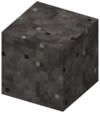 | Asaarde | BlockBlok | Asaarde is een blok uit Guhs. | ||
| Asblok | BlockBlok | Slows you down like soul sand; blue fire burns on it. Also as aarde.Vertraagt je als zielenzand; blauw vuur brandt erop. Ook asaarde. | |||
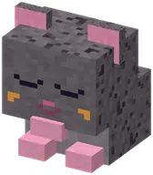 | Asguhknuffel | BlockBlok | Asguhknuffel is een blok uit Guhs. | ||
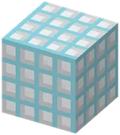 | Badtegel | BlockBlok | yesja | 1 | Badtegel is een blok uit Guhs. |
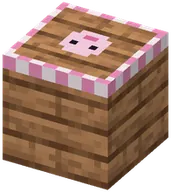 | Ballonsteiger | BlockBlok | yesja | Ballonsteiger is a block in Guhs. Its in-game text (Dutch): Hier wacht de luchtballon.Hier wacht de luchtballon. Praat met Kapitein Wolkje om in te stappen! | |
| Baltoguh-beeldje | BlockBlok | Baltoguh-beeldje is a block in Guhs. Its in-game text (Dutch): Een bronzen Baltoguh op een besneeuwde sokkel.Een bronzen Baltoguh op een besneeuwde sokkel. Voor de Held van Nomguh. Klik: auuuhoe! | |||
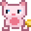 | Bankguh | BlockBlok | So vadsig it stores infinite items in its stomach. Search (@mod), sort, filter, a crafting grid, deposit all.Zo vadsig dat er oneindig veel spullen in zijn buikje passen | ||
 | Belegen kaasmuur | BlockBlok | yesja | Belegen kaasmuur is een blok uit Guhs. | |
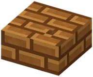 | Belegen kaasplaat | BlockBlok | yesja | Belegen kaasplaat is een blok uit Guhs. | |
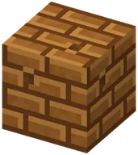 | Belegen kaasstenen | BlockBlok | yesja | 4 | Belegen kaasstenen is een blok uit Guhs. |
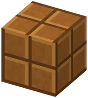 | Belegen kaastegels | BlockBlok | yesja | Dark, old cheese: the stone of the Voorraadkelder.Donkere, oude kaas: de steen van de Voorraadkelder. | |
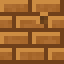 | Belegen kaastrap | BlockBlok | yesja | Belegen kaastrap is een blok uit Guhs. | |
| Besneeuwde dakpannen | BlockBlok | yesja | 2 | Besneeuwde dakpannen is een blok uit Guhs. | |
 | Besneeuwde dakplaat | BlockBlok | yesja | Besneeuwde dakplaat is een blok uit Guhs. | |
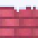 | Besneeuwde daktrap | BlockBlok | yesja | Besneeuwde daktrap is een blok uit Guhs. | |
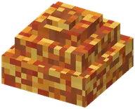 | Bladerhoopje | BlockBlok | yesja | Bladerhoopje is a block in Guhs. Its in-game text (Dutch): In de herfst: spring erin!In de herfst: spring erin! | |
| Blauwe guhkussen | BlockBlok | yesja | Blauwe guhkussen is een blok uit Guhs. | |
| Blauwe vadszak | BlockBlok | yesja | Blauwe vadszak is een blok uit Guhs. | |
| Bloemenslinger | BlockBlok | Bloemenslinger is a block in Guhs. Its in-game text (Dutch): Een slinger van hibiscus en blaadjes, voor aan...Een slinger van hibiscus en blaadjes, voor aan de muur. Meteen feest! | |||
| Blok kaasknabbels | BlockBlok | yesja | 3 | Nine knabbels in one block. Build a portal frame from it to reach the Guhmension.Negen knabbels in een blok. Bouw er een portaalframe van om naar de Guhmensie te gaan. | |
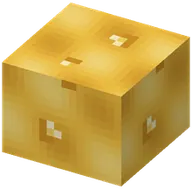 | Borrelende kaassaus | BlockBlok | yesja | Borrelende kaassaus is een blok uit Guhs. | |
 | Brococoliefknuffel | BlockBlok | Brococoliefknuffel is een blok uit Guhs. | ||
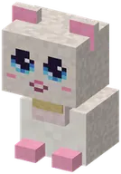 | Brontosaurusguhknuffel | BlockBlok | Brontosaurusguhknuffel is een blok uit Guhs. | ||
| Bruine guhkussen | BlockBlok | yesja | Bruine guhkussen is een blok uit Guhs. | |
| Bruine vadszak | BlockBlok | yesja | Bruine vadszak is een blok uit Guhs. | |
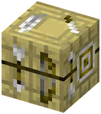 | Buizenwerkbank | BlockBlok | yesja | Buizenwerkbank is een blok uit Guhs. | |
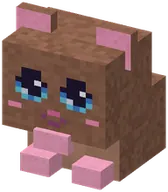 | Chocoguhknuffel | BlockBlok | Chocoguhknuffel is een blok uit Guhs. | ||
| Cyaan guhkussen | BlockBlok | yesja | Cyaan guhkussen is een blok uit Guhs. | |
| Cyaan vadszak | BlockBlok | yesja | Cyaan vadszak is een blok uit Guhs. | |
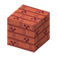 | Dakpan | BlockBlok | Dakpan is een blok uit Guhs. | ||
 | Dansvloertegel | BlockBlok | yesja | Dansvloertegel is een blok uit Guhs. | |
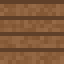 | Dienblad met warme kopjes | BlockBlok | Dienblad met warme kopjes is een blok uit Guhs. | ||
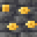 | Diepe kaasader | BlockBlok | Diepe kaasader is een blok uit Guhs. | ||
 | Discobalblok | BlockBlok | yesja | Discobalblok is een blok uit Guhs. | |
 | Discotegel (blauw) | BlockBlok | yesja | Discotegel (blauw) is een blok uit Guhs. | |
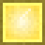 | Discotegel (geel) | BlockBlok | yesja | Discotegel (geel) is een blok uit Guhs. | |
 | Discotegel (groen) | BlockBlok | yesja | Discotegel (groen) is een blok uit Guhs. | |
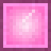 | Discotegel (roze) | BlockBlok | yesja | Discotegel (roze) is een blok uit Guhs. | |
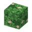 | Doolhofheg | BlockBlok | yesja | Doolhofheg is een blok uit Guhs. | |
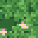 | Doolhofheg met guhgezicht | BlockBlok | Doolhofheg met guhgezicht is een blok uit Guhs. | ||
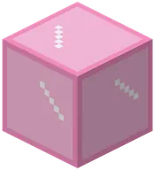 | Eenrichtingsvadsglas | BlockBlok | yesja | You can make it yourself too: 8 pink stained glass around pink wool gives 8.Je kunt het ook zelf maken: 8 roze glas om roze wol geeft er 8. | |
| Elf-Guhjeskruisje | BlockBlok | Elf-Guhjeskruisje is een blok uit Guhs. | |||
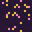 | Enderguh-ei | BlockBlok | Enderguh-ei is een blok uit Guhs. | ||
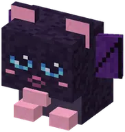 | Enderguhknuffel | BlockBlok | Enderguhknuffel is een blok uit Guhs. | ||
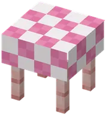 | Feestbuffettafel | BlockBlok | yesja | With all six brought, the feast starts at the feestbuffet: the tables fill with what you baked, grew and...Tijdens een Knusfeest staat hij vol lekkers | |
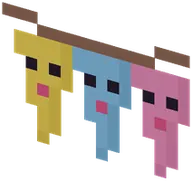 | Feestslingers | BlockBlok | Feestslingers is a block in Guhs. Its in-game text (Dutch): Geknutseld door de babyguhtjes van de...Geknutseld door de babyguhtjes van de Knuffelcreche. Voor het Grote Knusfeest! | ||
| Gatenkaas | BlockBlok | 1 | Gatenkaas is een blok uit Guhs. | ||
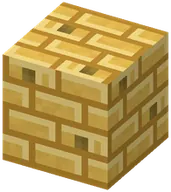 | Gatenkaasstenen | BlockBlok | yesja | 4 | Building stone (with stairs, slab and wall). Smelt into belegen kaasstenen.Bouwsteen (met trap, plaat en muur). Smelt tot belegen kaasstenen. |
| Gatenkaasstenen muur | BlockBlok | yesja | Gatenkaasstenen muur is een blok uit Guhs. | |
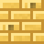 | Gatenkaasstenen plaat | BlockBlok | yesja | Gatenkaasstenen plaat is een blok uit Guhs. | |
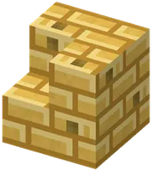 | Gatenkaasstenen trap | BlockBlok | yesja | Gatenkaasstenen trap is een blok uit Guhs. | |
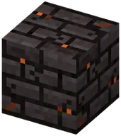 | Gebarsten houtskoolsteen stenen | BlockBlok | yesja | Gebarsten houtskoolsteen stenen is een blok uit Guhs. | |
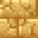 | Gebarsten kaaskorststenen | BlockBlok | yesja | Gebarsten kaaskorststenen is een blok uit Guhs. | |
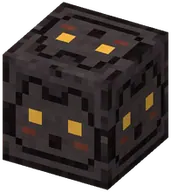 | Gebeitelde guh-houtskoolsteen stenen | BlockBlok | yesja | With a guh face chiselled in. Two slabs on top of each other.Met een guh-gezicht erin gebeiteld. Twee platen op elkaar. | |
| Geheim boekaltaar | BlockBlok | Geheim boekaltaar is een blok uit Guhs. | ||
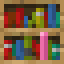 | Geheime boekenkast | BlockBlok | yesja | Geheime boekenkast is een blok uit Guhs. | |
| Gele guhkussen | BlockBlok | yesja | Gele guhkussen is een blok uit Guhs. | |
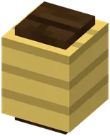 | Gele lampgion | BlockBlok | yesja | Gele lampgion is een blok uit Guhs. | |
| Gele vadszak | BlockBlok | yesja | Gele vadszak is een blok uit Guhs. | |
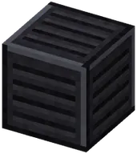 | Gepolijst roosterijzer | BlockBlok | yesja | 2 | Gepolijst roosterijzer is een blok uit Guhs. |
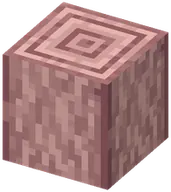 | Gestripte vadshoutstam | BlockBlok | Gestripte vadshoutstam is een blok uit Guhs. | ||
 | Glibberige kaassaus | BlockBlok | Glibberige kaassaus is een blok uit Guhs. | ||
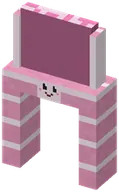 | Glijbaanpoortje | BlockBlok | Glijbaanpoortje is een blok uit Guhs. | ||
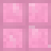 | Glijgoot | BlockBlok | yesja | Glijgoot is een blok uit Guhs. | |
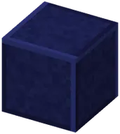 | Glimtegel | BlockBlok | yesja | Glimtegel is een blok uit Guhs. | |
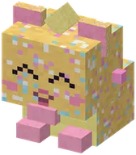 | Glitterguhknuffel | BlockBlok | Glitterguhknuffel is een blok uit Guhs. | ||
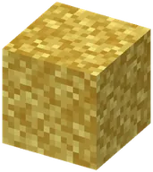 | Gloeiend kaasmos | BlockBlok | yesja | 2 | Light 9 (the carpet: 6). Moss block + kaasknabbels.Licht 9 (het tapijt: 6). Mosblok + kaasknabbels. |
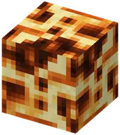 | Gloeikool | BlockBlok | yesja | 1 | Glows on the ceiling (light 15). Drops 2–4 gloeikoolgruis (Fortune helps), with Silk Touch the block.Gloeit aan het plafond (licht 15). Geeft 2–4 gloeikoolgruis (geluk helpt), met zijdezacht het blok. |
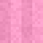 | Golfhole | BlockBlok | Golfhole is een blok uit Guhs. | ||
 | Golfvilt | BlockBlok | yesja | Golfvilt is een blok uit Guhs. | |
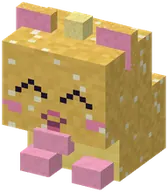 | Gouden Guhknuffel | BlockBlok | Gouden Guhknuffel is een blok uit Guhs. | ||
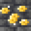 | Gouden kaasader | BlockBlok | Gouden kaasader is een blok uit Guhs. | ||
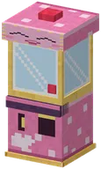 | Grijpmachine | BlockBlok | yesja | At the guh kermis and on the plein of the Knuffeldal. One go costs a ticket: a kermisbon or a coin of a...Op de guhkermis en op het plein van het Knuffeldal. Eén keer kost een kaartje: een kermisbon of een munt van... | |
| Grijze guhkussen | BlockBlok | yesja | Grijze guhkussen is een blok uit Guhs. | |
| Grijze vadszak | BlockBlok | yesja | Grijze vadszak is een blok uit Guhs. | |
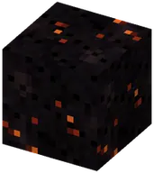 | Grillkool | BlockBlok | 1 | Grillkool is een blok uit Guhs. | |
| Groene guhkussen | BlockBlok | yesja | Groene guhkussen is een blok uit Guhs. | |
| Groene vadszak | BlockBlok | yesja | Groene vadszak is een blok uit Guhs. | |
| Grote knabbelschaal | BlockBlok | Grote knabbelschaal is a block in Guhs. Its in-game text (Dutch): Een reusachtige schaal voor een DUBBELE...Een reusachtige schaal voor een DUBBELE portie. Past er precies 32 kaasknabbels in. Of meer. | |||
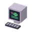 | Guh-computer | BlockBlok | Guh-computer is a block in Guhs. Its in-game text (Dutch): Een oude labcomputer met een knipperend...Een oude labcomputer met een knipperend guhgezichtje op het scherm. Bliep-njeg! | ||
| Guh-glijbaantje | BlockBlok | yesja | Climb the mint ladder, over the platform on two guh faces, and wieee! down the shiny slide.Een klimrek met guhoortjes, een platform op een guhsnoet en een glimmende glijbaan. Wieee! | ||
| Guh-ijsbloempje | BlockBlok | 1 | Guh-ijsbloempje is a block in Guhs. Its in-game text (Dutch): Een doorzichtig ijsblauw bloempje met een...Een doorzichtig ijsblauw bloempje met een piepklein guhgezichtje. Lichtblauwe kleurstof! | ||
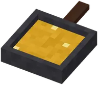 | Guh-koekenpan | BlockBlok | yesja | Right-click with Mika's vet to add fat (+64, up to 256), then with kaas knabbels to fry them.Rechtsklik met Mika's vet voor vet (+64, tot 256), dan met kaasknabbels om ze te frituren. | |
| Guh-molentje | BlockBlok | yesja | A little windmill with a guh face and turning sails. Put knabbelgraan in it (the grain of the Knuffeldal...Maalt knabbelgraan tot knabbelmeel. Sneller als het sneeuwt, heel vahoeg als het stormt! | ||
| Guh-palmblad | BlockBlok | Guh-palmblad is a block in Guhs. Its in-game text (Dutch): Lange wuivende bladeren.Lange wuivende bladeren. Er groeien kokosnoten onder! | |||
| Guh-palmplanken | BlockBlok | yesja | 1 | Guh-palmplanken is een blok uit Guhs. | |
| Guh-palmstam | BlockBlok | 1 | Guh-palmstam is een blok uit Guhs. | ||
| Guh-palmstam met gezichtje | BlockBlok | 1 | Guh-palmstam met gezichtje is a block in Guhs. Its in-game text (Dutch): Elke guh-palm heeft een gezichtje.Elke guh-palm heeft een gezichtje. Klik erop: hij knipoogt! Njeg. | ||
| Guh-schommel | BlockBlok | yesja | A pink swing with a guh head on the beam (the ropes come out of its chin). Push for higher, higher!Een roze schommel met een guhhoofd op de balk en een zacht kussentje. | ||
| Guh-slaapzak | BlockBlok | yesja | Guh-slaapzak is a block in Guhs. Its in-game text (Dutch): Slaap zonder bed!Slaap zonder bed! (Je spawnpunt blijft waar het was.) Na een hele nacht: uitgerust | ||
| Guh-telescoop | BlockBlok | Guh-telescoop is a block in Guhs. Its in-game text (Dutch): 's Nachts: rechtsklik en verbind de sterren tot...'s Nachts: rechtsklik en verbind de sterren tot een guh-sterrenbeeld | |||
| Guh-wastobbe | BlockBlok | yesja | Guh-wastobbe is een blok uit Guhs. | ||
| Guh-wiegje | BlockBlok | yesja | Guh-wiegje is a block in Guhs. Its in-game text (Dutch): Een wiegje met een guhgezichtje.Een wiegje met een guhgezichtje. Rechtsklik om te wiegen: babyguhs in de buurt groeien een beetje. | ||
| Guh-wip | BlockBlok | yesja | A plank on a little guh head with cushions and ear handles: two guhs seesaw together (friends love it).Een wip op een klein guhhoofdje, met kussentjes en guhoor-handvatjes. | ||
| Guh-xylofoon | BlockBlok | yesja | Play a song on the guh-xylofoon: all guhs nearby sing along, wobbling, with little notes (and gardens grow...Speel een liedje op de guh-xylofoon: alle guhs in de buurt zingen wiebelend mee, met muzieknootjes (en... | ||
| Guhbloempot | BlockBlok | yesja | Guhbloempot is a block in Guhs. Its in-game text (Dutch): Doe er zaadjes in en geef water.Doe er zaadjes in en geef water. Rechtsklik als het rijp is! | ||
| Guhbloesem | BlockBlok | Guhbloesem is een blok uit Guhs. | |||
| Guhbloesemboompje | BlockBlok | Guhbloesemboompje is een blok uit Guhs. | |||
| Guhbloesemstam | BlockBlok | 1 | Guhbloesemstam is een blok uit Guhs. | ||
| Guhbrouwketel | BlockBlok | yesja | Guhbrouwketel is een blok uit Guhs. | ||
| Guhdraad | BlockBlok | yesja | Pink redstone dust that never fades. It connects like redstone dust (dots, lines, corners, up steps).Roze redstonestof die nooit zwakker wordt. Hij verbindt zoals redstonestof (puntjes, lijnen, hoeken, trapjes... | ||
| Guhgezichtje in de schors | BlockBlok | yesja | Guhgezichtje in de schors is a block in Guhs. Its in-game text (Dutch): Rechtsklik: verander zijn humeurRechtsklik: verander zijn humeur | ||
| Guhgezichtje in knuffelsteen | BlockBlok | yesja | Guhgezichtje in knuffelsteen is a block in Guhs. Its in-game text (Dutch): Rechtsklik: een ander gezichtjeRechtsklik: een ander gezichtje | ||
| Guhhuisje (groot) | BlockBlok | yesja | Room for 8, with a chimney and a bow.Met schoorsteentje en een strik op het oor. Villa Vahoeg! | ||
| Guhhuisje (klein) | BlockBlok | yesja | 1 | Guhhuisje (klein) is a block in Guhs. Its in-game text (Dutch): Een knus guhhoofd: de oortjes zijn het dak,...Een knus guhhoofd: de oortjes zijn het dak, de ogen de raampjes, de snoet de deur. | |
| Guhhuisje (medium) | BlockBlok | yesja | 1 | Room for 5, with flower boxes.Met bloembakjes onder de oogjes. Extra gezellig! | |
| Guhknuffel | BlockBlok | Guhknuffel is een blok uit Guhs. | |||
| Guhkristalblok | BlockBlok | yesja | Guhkristalblok is een blok uit Guhs. | ||
| Guhkristalcluster | BlockBlok | Guhkristalcluster is een blok uit Guhs. | |||
| Guhkristallamp | BlockBlok | yesja | From the crystal mines: crystal blocks and crystal lamps (full light), the guh crystal spyglass — and the...Uit de kristalmijnen: kristalblokken en kristallampen (vol licht), de guh-kristalverrekijker — en de tandarts... | ||
| Guhkristalsteen | BlockBlok | Guhkristalsteen is een blok uit Guhs. | |||
| Guhlampje | BlockBlok | yesja | A standing lamp with guh ears, a pluis tuft and a glowing snoet face (asleep when off).Een lampje met oortjes en een lief gezichtje. Rechtsklik: aan of uit. | ||
| Guhleesfauteuil | BlockBlok | yesja | Guhleesfauteuil is een blok uit Guhs. | |
| Guhlelie | BlockBlok | Guhlelie is een blok uit Guhs. | |||
| Guhmoestuinbak | BlockBlok | yesja | Plant knabbelzaadjes, theekruidzaadjes or guhbloemzaadjes in a guh_bloempot or a guh_moestuinbak and water...Een hele rij plantjes in een bak. Tamme guhs geven hem water! | ||
| Guhmolen-as | BlockBlok | Guhmolen-as is een blok uit Guhs. | |||
| Guhnaaitafel | BlockBlok | yesja | Guhnaaitafel is een blok uit Guhs. | ||
| Guhnestje | BlockBlok | yesja | Guhs sleep in it at night, with their family (up to 6 per nest).Guhs slapen er 's nachts in, met het hele gezin. Ook jouw tamme guhs! | ||
| Guhoor-lantaarntje | BlockBlok | yesja | Guhoor-lantaarntje is een blok uit Guhs. | ||
| Guhoortjes | BlockBlok | 1 | Guhoortjes is een blok uit Guhs. | ||
| Guhpaddenstoelhoed | BlockBlok | Guhpaddenstoelhoed is een blok uit Guhs. | |||
| Guhpaddenstoelsteel | BlockBlok | Guhpaddenstoelsteel is een blok uit Guhs. | |||
| Guhpaddenstoeltje | BlockBlok | Guhpaddenstoeltje is a block in Guhs. Its in-game text (Dutch): Beendermeel erop: een reuzenguhpaddenstoel!Beendermeel erop: een reuzenguhpaddenstoel! | |||
| Guhrad | BlockBlok | yesja | A big pink flower-shaped running wheel (3 blocks wide and tall).Een groot roze bloemvormig loopwiel (3 blokken breed en hoog). | ||
| Guhshake (decoratie) | BlockBlok | Guhshake (decoratie) is een blok uit Guhs. | |||
| Guhspawner | BlockBlok | Found in hamster houses. Unlike normal spawners you can mine it with a pickaxe and take it home.Te vinden in hamsterhuizen. Anders dan gewone spawners kun je hem met een houweel meenemen. | |||
| Guhsteentjespad | BlockBlok | yesja | Guhsteentjespad is een blok uit Guhs. | ||
| Guhstoel | BlockBlok | yesja | The backrest is a guh head, ears and all. Sit on it (right-click).De rugleuning is een guhhoofd, met oortjes en al. Ga erop zitten (rechtsklik). | ||
| Guhtaart | BlockBlok | yesja | A pink cake with guh eyes. Place it and eat it in 7 bites, like a normal cake.Een roze taart met guhogen. Zet hem neer en eet hem op in 7 happen, net als een gewone taart. | ||
| Guhtafel | BlockBlok | yesja | A guh face looks up at you from the table top.Een guhgezichtje kijkt je aan vanaf het tafelblad. | ||
| Guhvlaggetjes | BlockBlok | yesja | A string of little flags. Put several in a row for a garland; they hang in the air.Een touwtje met vlaggetjes. Zet er een paar op een rij voor een slinger; ze blijven in de lucht hangen. | ||
| Guhvoerbak | BlockBlok | yesja | Guhvoerbak is a block in Guhs. Its in-game text (Dutch): Doe er knabbelvoer in: de boerderijdieren eten er...Doe er knabbelvoer in: de boerderijdieren eten er vanzelf uit | ||
| Guhwai'i-orchidee | BlockBlok | 1 | Guhwai'i-orchidee is a block in Guhs. Its in-game text (Dutch): Een paarse orchidee aan een sierlijk boogje.Een paarse orchidee aan een sierlijk boogje. | ||
| Haarwasbak | BlockBlok | yesja | Haarwasbak is een blok uit Guhs. | ||
| Houtskoolsteen | BlockBlok | 3 | The netherrack of the guhs. Fire on top burns forever, in every dimension.De netherrack van de guhs. Vuur erop brandt eeuwig, in elke dimensie. | ||
| Houtskoolsteen stenen | BlockBlok | yesja | 6 | Houtskoolsteen stenen is een blok uit Guhs. | |
| Houtskoolsteen stenen hek | BlockBlok | yesja | Houtskoolsteen stenen hek is een blok uit Guhs. | ||
| Houtskoolsteen stenen muur | BlockBlok | yesja | Houtskoolsteen stenen muur is een blok uit Guhs. | ||
| Houtskoolsteen stenen plaat | BlockBlok | yesja | 1 | Houtskoolsteen stenen plaat is een blok uit Guhs. | |
| Houtskoolsteen stenen trap | BlockBlok | yesja | Houtskoolsteen stenen trap is een blok uit Guhs. | ||
| Houtskoolsteen-kaasknabbelerts | BlockBlok | Drops 2–6 kaasknabbels and a little experience.Geeft 2–6 kaasknabbels en wat ervaring. | |||
| Hula-bloemenmat | BlockBlok | Hula-bloemenmat is a block in Guhs. Its in-game text (Dutch): Een gevlochten matje vol bloemen.Een gevlochten matje vol bloemen. Op het podium dans je hierop de hula! | |||
| IJspegelguh-kristal | BlockBlok | IJspegelguh-kristal is a block in Guhs. Its in-game text (Dutch): Een gloeiend ijskristal in de vorm van een...Een gloeiend ijskristal in de vorm van een guhoor. Luistert het mee? Njeg! | |||
| Kaasader | BlockBlok | Kaasader is een blok uit Guhs. | |||
 | Kaasbergijs | BlockBlok | Kaasbergijs is een blok uit Guhs. | ||
| Kaasbloem | BlockBlok | 1 | Four new flowers grow all over the Guhmension: cheese flower, guh ears, pink guh flower and knabbel rose.Vier nieuwe bloemen groeien overal in de Guhmensie: kaasbloem, guhoortjes, roze guhbloem en knabbelroos. | ||
| Kaaskluis | BlockBlok | Kaaskluis is a block in Guhs. Its in-game text (Dutch): Rechtsklik met 2 goudkaas: een schat!Rechtsklik met 2 goudkaas: een schat! | |||
| Kaasknabbel-diepsteen | BlockBlok | Kaasknabbel-diepsteen is een blok uit Guhs. | |||
| Kaasknabbelaarde | BlockBlok | Kaasknabbelaarde is een blok uit Guhs. | |||
| Kaasknabbelkeien | BlockBlok | Kaasknabbelkeien is een blok uit Guhs. | |||
| Kaasknabbelsteen | BlockBlok | Stone, deepslate, dirt and cobblestone with cheese puffs, on every height.Steen, diepsteen, aarde en keien met kaaspuffen, op elke hoogte. | |||
| Kaaskoraal | BlockBlok | 1 | Kaaskoraal is a block in Guhs. Its in-game text (Dutch): Blaast luchtbelletjes: onder water kun je er vlakbij...Blaast luchtbelletjes: onder water kun je er vlakbij weer ademen. | ||
| Kaaskoraalblok | BlockBlok | yesja | Kaaskoraalblok is een blok uit Guhs. | ||
| Kaaskorrelerts | BlockBlok | 1 | Rare, only in gatenkaas. 1–2 kaaskorrels (Fortune works).Zeldzaam, alleen in gatenkaas. 1–2 kaaskorrels (geluk werkt). | ||
| Kaaskorst | BlockBlok | 5 | Kaaskorst is een blok uit Guhs. | ||
| Kaaskorststenen | BlockBlok | yesja | 4 | Kaaskorststenen is een blok uit Guhs. | |
| Kaaskorststenen muur | BlockBlok | yesja | Kaaskorststenen muur is een blok uit Guhs. | |
 | Kaaskorststenen plaat | BlockBlok | yesja | Kaaskorststenen plaat is een blok uit Guhs. | |
 | Kaaskorststenen trap | BlockBlok | yesja | Kaaskorststenen trap is een blok uit Guhs. | |
 | Kaasmelkfles | BlockBlok | Kaasmelkfles is een blok uit Guhs. | ||
| Kaasmodder | BlockBlok | yesja | Kaasmodder is een blok uit Guhs. | ||
| Kaasmoerasguhknuffel | BlockBlok | Kaasmoerasguhknuffel is een blok uit Guhs. | |||
| Kaasmostapijt | BlockBlok | yesja | Kaasmostapijt is een blok uit Guhs. | ||
| Kaasriet | BlockBlok | Kaasriet is een blok uit Guhs. | |||
| Kaasstalactiet | BlockBlok | Kaasstalactiet is een blok uit Guhs. | |||
 | Kaasweg | BlockBlok | Kaasweg is een blok uit Guhs. | ||
| Kaaswegplaat | BlockBlok | Kaaswegplaat is een blok uit Guhs. | |||
| Kappersstoel | BlockBlok | yesja | Kappersstoel is een blok uit Guhs. | ||
| Karretjesautomaat | BlockBlok | Karretjesautomaat is a block in Guhs. Its in-game text (Dutch): Rechtsklik: een karretje op de rails ernaastRechtsklik: een karretje op de rails ernaast | ||
| Katapultbakje | BlockBlok | Katapultbakje is een blok uit Guhs. | |||
| Kippennestje | BlockBlok | yesja | Kippennestje is a block in Guhs. Its in-game text (Dutch): Blije knabbelkippetjes leggen hier hun knabbelei inBlije knabbelkippetjes leggen hier hun knabbelei in | ||
 | Kist met gestolen kaasknabbels | BlockBlok | Kist met gestolen kaasknabbels is een blok uit Guhs. | ||
| Kloontank | BlockBlok | Kloontank is a block in Guhs. Its in-game text (Dutch): De grote glazen tank van Professor Knabbelkloon, vol...De grote glazen tank van Professor Knabbelkloon, vol borrelend roze knabbelsap. | |||
| Knabbelbak | BlockBlok | yesja | Knabbelbak is een blok uit Guhs. | ||
| Knabbelbaken | BlockBlok | yesja | The beacon of the guhs, made with the gloeister. Put it on a pyramid of 1–4 layers of blocks of kaasknabbels,...Het baken van de guhs, gemaakt met de gloeister. Zet het op een piramide van 1–4 lagen blokken kaasknabbels,... | ||
| Knabbelkorf | BlockBlok | yesja | Knabbelkorf is een blok uit Guhs. | ||
| Knabbeloven | BlockBlok | yesja | Knabbeloven is een blok uit Guhs. | ||
| Knabbelpoort | BlockBlok | Knabbelpoort is een blok uit Guhs. | |||
 | Knabbelportaalframe | BlockBlok | Knabbelportaalframe is een blok uit Guhs. | ||
| Knabbelroos | BlockBlok | 1 | Knabbelroos is een blok uit Guhs. | ||
| Knabbelschoorsteentje | BlockBlok | yesja | Knabbelschoorsteentje is een blok uit Guhs. | ||
| Knabbelschreeuwer | BlockBlok | A Mika alarm with a wide-open mouth full of teeth. Only with Silk Touch.Een Mika-alarm met een wijd open tandenmond. Alleen met zijdezacht. | |||
| Knabbelsensor | BlockBlok | A lump of old cheese with two listening guh ears. Only with Silk Touch.Een klompje oude kaas met twee luisterende guhoren. Alleen met zijdezacht. | |||
| Knabbelslot | BlockBlok | Knabbelslot is een blok uit Guhs. | |||
| Knabbelsokkel | BlockBlok | Knabbelsokkel is een blok uit Guhs. | |||
| Knotwilgstam | BlockBlok | 1 | Knotwilgstam is een blok uit Guhs. | ||
| Knotwilgtakjes | BlockBlok | Knotwilgtakjes is een blok uit Guhs. | |||
| Knuffelgras | BlockBlok | Knuffelgras is een blok uit Guhs. | |||
| Knuffelklinkers | BlockBlok | yesja | Knuffelklinkers is een blok uit Guhs. | ||
| Knuffelsteen | BlockBlok | yesja | 5 | Knuffelsteen is een blok uit Guhs. | |
| Knuffelsteenmuurtje | BlockBlok | yesja | Knuffelsteenmuurtje is een blok uit Guhs. | |
| Knuffelsteenplaat | BlockBlok | yesja | Knuffelsteenplaat is een blok uit Guhs. | ||
 | Knuffelsteentrap | BlockBlok | yesja | Knuffelsteentrap is een blok uit Guhs. | |
| Knus-oorkonde | BlockBlok | Knus-oorkonde is a block in Guhs. Its in-game text (Dutch): Voor de Knuffelburgemeester van het KnuffeldalVoor de Knuffelburgemeester van het Knuffeldal | |||
| Kokosnoot | BlockBlok | 1 | Kokosnoot is een blok uit Guhs. | ||
| Koningguhknuffel | BlockBlok | Koningguhknuffel is een blok uit Guhs. | |||
| Koninklijke guhtroon | BlockBlok | In the treasure room (behind the throne, through the door in the apse) and in the dungeon: royal loot, and in...In de schatkamer (achter de troon, door de deur in de apsis) en in de kerker: koninklijke buit, en in de... | |||
 | Kop van de sjoelbak | BlockBlok | Kop van de sjoelbak is een blok uit Guhs. | ||
| Leenkledingkast | BlockBlok | yesja | Leenkledingkast is een blok uit Guhs. | ||
| Lichtblauwe guhkussen | BlockBlok | yesja | Lichtblauwe guhkussen is een blok uit Guhs. | |
| Lichtblauwe vadszak | BlockBlok | yesja | Lichtblauwe vadszak is een blok uit Guhs. | |
| Lichtgrijze guhkussen | BlockBlok | yesja | Lichtgrijze guhkussen is een blok uit Guhs. | |
| Lichtgrijze vadszak | BlockBlok | yesja | Lichtgrijze vadszak is een blok uit Guhs. | |
| Lichtgroene guhkussen | BlockBlok | yesja | Lichtgroene guhkussen is een blok uit Guhs. | |
| Lichtgroene vadszak | BlockBlok | yesja | Lichtgroene vadszak is een blok uit Guhs. | |
| Maagbodem | BlockBlok | Maagbodem is een blok uit Guhs. | |||
| Maagwand | BlockBlok | Maagwand is een blok uit Guhs. | |||
| Magenta guhkussen | BlockBlok | yesja | Magenta guhkussen is een blok uit Guhs. | |
| Magenta vadszak | BlockBlok | yesja | Magenta vadszak is een blok uit Guhs. | |
| Magere-guhknuffel | BlockBlok | Magere-guhknuffel is een blok uit Guhs. | |||
| Marshmallowkampvuurkuil | BlockBlok | yesja | Marshmallowkampvuurkuil is a block in Guhs. Its in-game text (Dutch): Gezellig met marshmallows.Gezellig met marshmallows. Laait hij te vadsig op? Bel de brandweer! | ||
| Medicijnkist | BlockBlok | Medicijnkist is a block in Guhs. Its in-game text (Dutch): Het medicijn voor de guhbaby's van Nomguh.Het medicijn voor de guhbaby's van Nomguh. Zuinig op zijn, njeg! | |||
| Mengketel | BlockBlok | yesja | Mengketel is a block in Guhs. Its in-game text (Dutch): 3 snotkruidjes en een kaasmelk erin: blub blub, een...3 snotkruidjes en een kaasmelk erin: blub blub, een kaasmelkdrankje | ||
 | Mika (in een fort) | BlockBlok | Mika (in een fort) is een blok uit Guhs. | ||
| Mika-blik | BlockBlok | yesja | Mika-blik is een blok uit Guhs. | ||
| Mika-fortplek | BlockBlok | Mika-fortplek is een blok uit Guhs. | |||
| Mika-mepgat | BlockBlok | Mika-mepgat is een blok uit Guhs. | |||
| Mika-steen | BlockBlok | yesja | 3 | Mika-steen is een blok uit Guhs. | |
 | Mika-steenpilaar | BlockBlok | yesja | Mika-steenpilaar is een blok uit Guhs. | |
| Mika-steenplaat | BlockBlok | yesja | 1 | Mika-steenplaat is een blok uit Guhs. | |
 | Mika-steentrap | BlockBlok | yesja | Mika-steentrap is een blok uit Guhs. | |
| Mika-trofee | BlockBlok | Mika-trofee is een blok uit Guhs. | |||
| Mikatrofee | BlockBlok | yesja | Mikatrofee is een blok uit Guhs. | ||
| Mini-luchtballon | BlockBlok | yesja | Mini-luchtballon is a block in Guhs. Its in-game text (Dutch): Een klein guhballonnetje met een piepklein...Een klein guhballonnetje met een piepklein brandertje. Zweeft niet echt, maar bijna | ||
| Minisleetje | BlockBlok | Minisleetje is een blok uit Guhs. | |||
| Mintgroene lampgion | BlockBlok | yesja | Mintgroene lampgion is een blok uit Guhs. | ||
| Modderig kaasgras | BlockBlok | Modderig kaasgras is een blok uit Guhs. | |||
| Moerasgras | BlockBlok | Moerasgras is een blok uit Guhs. | |||
| Molenwiek | BlockBlok | Molenwiek is een blok uit Guhs. | |||
| Mosterd-nylium | BlockBlok | Mosterd-nylium is een blok uit Guhs. | |||
| Mosterdblok | BlockBlok | Mosterdblok is een blok uit Guhs. | |||
| Mosterdscheutjes | BlockBlok | Mosterdscheutjes is een blok uit Guhs. | |||
| Motknabbel | BlockBlok | Motknabbel is a block in Guhs. Its in-game text (Dutch): Een gloeiende kaasmot-knabbel, uitgespuugd door een...Een gloeiende kaasmot-knabbel, uitgespuugd door een kikkerguh | |||
| Muntguhknuffel | BlockBlok | Muntguhknuffel is een blok uit Guhs. | |||
| Nachtlampion | BlockBlok | Nachtlampion is een blok uit Guhs. | |||
| Onderdelenkist | BlockBlok | Onderdelenkist is een blok uit Guhs. | |||
| Opper-Mikatrofee | BlockBlok | Opper-Mikatrofee is een blok uit Guhs. | |||
| Oranje guhkussen | BlockBlok | yesja | Oranje guhkussen is een blok uit Guhs. | |
| Oranje vadszak | BlockBlok | yesja | Oranje vadszak is een blok uit Guhs. | |
| Paarse guhkussen | BlockBlok | yesja | Paarse guhkussen is een blok uit Guhs. | |
| Paarse vadszak | BlockBlok | yesja | Paarse vadszak is een blok uit Guhs. | |
| Paradijsvogelbloem | BlockBlok | 1 | Paradijsvogelbloem is a block in Guhs. Its in-game text (Dutch): Een oranje bloem die eruitziet als een...Een oranje bloem die eruitziet als een vogeltje. Tjilp? Njeg! | ||
| Parelmoer | BlockBlok | yesja | 1 | Parelmoer is een blok uit Guhs. | |
| Parelmoertegels | BlockBlok | yesja | Parelmoertegels is een blok uit Guhs. | ||
| Pindasaus-nylium | BlockBlok | Bone meal grows scheutjes and zwammetjes; bone meal on a zwammetje on its own nylium grows a giant saté...Beenmeel laat scheutjes en zwammetjes groeien; beenmeel op een zwammetje op zijn eigen nylium laat een... | |||
| Pindasausplasje | BlockBlok | Pindasausplasje is een blok uit Guhs. | |||
| Pindascheutjes | BlockBlok | Pindascheutjes is een blok uit Guhs. | |||
| Pinguhknuffel | BlockBlok | Pinguhknuffel is een blok uit Guhs. | |||
| Pluisdak | BlockBlok | yesja | 2 | Pluisdak is een blok uit Guhs. | |
| Pluisdakplaat | BlockBlok | yesja | Pluisdakplaat is een blok uit Guhs. | ||
 | Pluisdaktrap | BlockBlok | yesja | Pluisdaktrap is een blok uit Guhs. | |
| Pluisgras | BlockBlok | Pluisgras is a block in Guhs. Its in-game text (Dutch): Zacht roze pluis. Er zweeft af en toe een pluisje af.Zacht roze pluis. Er zweeft af en toe een pluisje af. | |||
| Pluisguhknuffel | BlockBlok | Pluisguhknuffel is een blok uit Guhs. | |||
| Pluiswolblok | BlockBlok | yesja | 1 | Pluiswolblok is een blok uit Guhs. | |
| Pluizenboombladeren | BlockBlok | Pluizenboombladeren is een blok uit Guhs. | |||
| Pluizenboomstam | BlockBlok | 1 | Pluizenboomstam is een blok uit Guhs. | ||
| Pluizenboomzaailing | BlockBlok | Pluizenboomzaailing is a block in Guhs. Its in-game text (Dutch): Groeit uit tot een pluizige roze boomGroeit uit tot een pluizige roze boom | |||
| Pluizige tunnel | BlockBlok | yesja | Soft pink fur tunnel pieces join up by themselves (straight, bends, T, crossings), every entrance a guh face.Zachte roze vachttunnel. Leg de stukjes aan elkaar voor een kronkeltunnel! | ||
| Plumeria | BlockBlok | 1 | Plumeria is a block in Guhs. Its in-game text (Dutch): Witte sterretjesbloemen met een zonnig hartje.Witte sterretjesbloemen met een zonnig hartje. Ze ruiken naar vakantie. | ||
| Polderijs | BlockBlok | yesja | Polderijs is een blok uit Guhs. | ||
| Poster: Onberekenbaar vahoeg | BlockBlok | yesja | Poster: Onberekenbaar vahoeg is a block in Guhs. Its in-game text (Dutch): Het beroemde plaatje: de meter...Het beroemde plaatje: de meter slaat door tot ONBEREKENBAAR VAHOEG. Hang hem aan de muur! | ||
| Racecheckpoint | BlockBlok | Racecheckpoint is een blok uit Guhs. | |||
| Regenboog-boostring | BlockBlok | Regenboog-boostring is een blok uit Guhs. | |||
| Regenboogguhknuffel | BlockBlok | Regenboogguhknuffel is een blok uit Guhs. | |||
| Regenboogweg | BlockBlok | Regenboogweg is een blok uit Guhs. | |||
| Regenboogwegplaat | BlockBlok | Regenboogwegplaat is een blok uit Guhs. | |||
| Rekje reageerbuisjes | BlockBlok | Rekje reageerbuisjes is a block in Guhs. Its in-game text (Dutch): Roze, paars en lila knabbelsap in buisjes.Roze, paars en lila knabbelsap in buisjes. Niet opdrinken! (Tenzij je dubbel honger hebt.) | |||
| Reuzenschelp | BlockBlok | Reuzenschelp is een blok uit Guhs. | |||
| Rieten dak | BlockBlok | Rieten dak is a block in Guhs. Its in-game text (Dutch): Dik strodak, zoals op Lilo's surfhut. Knisper!Dik strodak, zoals op Lilo's surfhut. Knisper! | |||
| Rieten dakplaat | BlockBlok | Rieten dakplaat is a block in Guhs. Its in-game text (Dutch): Een half laagje riet.Een half laagje riet. | |||
 | Rieten daktrap | BlockBlok | Rieten daktrap is a block in Guhs. Its in-game text (Dutch): Voor een schuin tiki-dakje.Voor een schuin tiki-dakje. | ||
| Rijpgras | BlockBlok | Rijpgras is een blok uit Guhs. | |||
| Rijpsprietjes | BlockBlok | Rijpsprietjes is a block in Guhs. Its in-game text (Dutch): Knisperende sprietjes vol rijp.Knisperende sprietjes vol rijp. Knip ze met een schaar! | |||
| Rode guhkussen | BlockBlok | yesja | Rode guhkussen is een blok uit Guhs. | |
| Rode vadszak | BlockBlok | yesja | Rode vadszak is een blok uit Guhs. | |
| Rommelige papieren | BlockBlok | Rommelige papieren is a block in Guhs. Its in-game text (Dutch): Vol krabbels, formules en getekende...Vol krabbels, formules en getekende kaasknabbels. Heel belangrijk. Waarschijnlijk. | |||
| Rommeltje van 626 | BlockBlok | Rommeltje van 626 is a block in Guhs. Its in-game text (Dutch): Alleen maar rommel, niks kapot!Alleen maar rommel, niks kapot! Klik erop om op te ruimen. | |||
| Rookgat | BlockBlok | yesja | Smokes like a signal fire. Roosterijzer tralies on top of gloeikool.Rookt als een signaalvuur. Roosterijzer tralies boven op gloeikool. | ||
| Roosterijzer | BlockBlok | 2 | The basalt of the Rookdelta: polished, as a pillar and as roosterijzer tralies (grates).De basalt van de Rookdelta: gepolijst, als pilaar en als roosterijzer tralies. | ||
| Roosterijzer pilaar | BlockBlok | yesja | Roosterijzer pilaar is een blok uit Guhs. | ||
| Roosterijzer tralies | BlockBlok | yesja | 2 | Roosterijzer tralies is een blok uit Guhs. | |
| Routelantaarn | BlockBlok | Routelantaarn is een blok uit Guhs. | |||
| Routepaaltje | BlockBlok | yesja | Routepaaltje is a block in Guhs. Its in-game text (Dutch): Rood-wit, met een gloeiend guhoortje erop: zo...Rood-wit, met een gloeiend guhoortje erop: zo verdwaal je nooit in de sneeuwstorm. | ||
| Roze badschuim | BlockBlok | yesja | Roze badschuim is een blok uit Guhs. | ||
| Roze Guh Koek | BlockBlok | A pink-glazed koek with big shiny blue eyes and a tiny snoet. Place it and you get a clear plastic tray with...Eet hem op: Lief kijken! Zet hem neer: een bakje met plek voor zes. | |||
| Roze guhbloem | BlockBlok | 2 | Roze guhbloem is een blok uit Guhs. | ||
 | Roze guhgras | BlockBlok | Roze guhgras is een blok uit Guhs. | ||
| Roze guhkussen | BlockBlok | yesja | Roze guhkussen is een blok uit Guhs. | ||
| Roze guhslijmblok | BlockBlok | yesja | 1 | From 9 guh slimeballs. Bouncy and sticky, exactly like a slime block (also for sticky pistons: guh slimeball...Van 9 guhslijmballen. Verend en plakkerig, precies als een slijmblok (ook voor kleverige zuigers: guhslijmbal... | |
| Roze hibiscus | BlockBlok | 1 | Roze hibiscus is a block in Guhs. Its in-game text (Dutch): De mooiste bloem van Guhwai'i.De mooiste bloem van Guhwai'i. Lilo-guh draagt er een achter haar oor. | ||
| Roze lampgion | BlockBlok | yesja | Pink, yellow and mint. Give full light; hang them under a block or put them down.Roze, geel en mint. Geven vol licht; hang ze onder een blok of zet ze neer. | ||
| Roze tiki-masker | BlockBlok | Roze tiki-masker is a block in Guhs. Its in-game text (Dutch): Roze geschilderd, met turquoise oortjes.Roze geschilderd, met turquoise oortjes. Het vrolijkste masker van het strand. | |||
| Roze vadszak | BlockBlok | yesja | Roze vadszak is een blok uit Guhs. | ||
| Samengeperste super vahoege vads | BlockBlok | A glossy guh-pink ore hidden in the Guhmension's ground (never on the surface), from the bottom up to y90 —...Een glanzend guhroze erts diep in de grond van de Guhmensie (nooit aan het oppervlak), van de bodem tot y90 —... | |||
| Satéstam | BlockBlok | The trunks of the giant skewers and sausages, with sate vlees, mosterdblok and uienlicht (light) as their...De stammen van de reuzenspiezen en -worsten, met satévlees, mosterdblok en uienlicht (licht) als 'bladeren'. | |||
| Satévlees | BlockBlok | Satévlees is een blok uit Guhs. | |||
| Satézwammetje | BlockBlok | Satézwammetje is een blok uit Guhs. | |||
| Schelpjeslampion | BlockBlok | Schelpjeslampion is a block in Guhs. Its in-game text (Dutch): Een lampje van roze schelpjes dat zachtjes...Een lampje van roze schelpjes dat zachtjes gloeit. | |||
| Scheve Mikaplank | BlockBlok | yesja | Scheve Mikaplank is een blok uit Guhs. | ||
| Schilly-eitjes | BlockBlok | Schilly-eitjes is a block in Guhs. Its in-game text (Dutch): Ze liggen warm in het zand.Ze liggen warm in het zand. Straks: knak, knak... kleine Schillytjes! | |||
| Seizoensbloembak | BlockBlok | yesja | Seizoensbloembak is a block in Guhs. Its in-game text (Dutch): Bloeit mee met de seizoenen.Bloeit mee met de seizoenen. Rechtsklik: wat kun je er nu mee? | ||
| Seizoensslinger | BlockBlok | yesja | Seizoensslinger is een blok uit Guhs. | ||
| Sjoelbakplank | BlockBlok | yesja | Sjoelbakplank is een blok uit Guhs. | ||
 | Sjoelpoortjes (2-3-4-1) | BlockBlok | Sjoelpoortjes (2-3-4-1) is een blok uit Guhs. | ||
| Sjoelvakjes | BlockBlok | Sjoelvakjes is een blok uit Guhs. | |||
| Slaperige sneeuwguhspar | BlockBlok | 1 | Slaperige sneeuwguhspar is een blok uit Guhs. | ||
| Sledebellenboog | BlockBlok | Sledebellenboog is een blok uit Guhs. | |||
| Sledehondenmandje | BlockBlok | Sledehondenmandje is een blok uit Guhs. | |||
| Sledespoorsneeuw | BlockBlok | yesja | Sledespoorsneeuw is een blok uit Guhs. | ||
| Sledesprintbeker | BlockBlok | Sledesprintbeker is een blok uit Guhs. | |||
| Smeulkooltjes | BlockBlok | Smeulkooltjes is een blok uit Guhs. | |||
| Sneeuwguh | BlockBlok | Sneeuwguh is een blok uit Guhs. | |||
| Sneeuwguhknuffel | BlockBlok | Sneeuwguhknuffel is een blok uit Guhs. | |||
| Sneeuwguhsparnaalden | BlockBlok | Sneeuwguhsparnaalden is een blok uit Guhs. | |||
| Sneeuwguhsparstam | BlockBlok | 1 | Sneeuwguhsparstam is een blok uit Guhs. | ||
| Sneeuwguhsparzaailing | BlockBlok | Sneeuwguhsparzaailing is a block in Guhs. Its in-game text (Dutch): Een piepklein sparretje met een...Een piepklein sparretje met een sneeuwmutsje. Groeit uit tot een echte sneeuwguhspar! | |||
| Sneeuwpopguh | BlockBlok | Sneeuwpopguh is a block in Guhs. Its in-game text (Dutch): Brrr, maar wel vahoegBrrr, maar wel vahoeg | |||
| Speelkleed | BlockBlok | yesja | Speelkleed is a block in Guhs. Its in-game text (Dutch): Een zacht speelkleed met een lachende guh.Een zacht speelkleed met een lachende guh. Om op te kruipen! | ||
| Spookguhknuffel | BlockBlok | Spookguhknuffel is een blok uit Guhs. | |||
| Stapeltje labnotities | BlockBlok | Stapeltje labnotities is een blok uit Guhs. | |||
| Stapeltje sjoelschijven | BlockBlok | yesja | Stapeltje sjoelschijven is een blok uit Guhs. | ||
| Sterrenhemelguhknuffel | BlockBlok | Sterrenhemelguhknuffel is een blok uit Guhs. | |||
| Sterrenlantaarn | BlockBlok | yesja | Sterrenlantaarn is a block in Guhs. Its in-game text (Dutch): Een lantaarntje met een ster erin.Een lantaarntje met een ster erin. Voor het Grote Knusfeest! | ||
| Stuiterpaddenstoel | BlockBlok | Stuiterpaddenstoel is een blok uit Guhs. | |||
| Surfplankenrek | BlockBlok | Surfplankenrek is a block in Guhs. Its in-game text (Dutch): Drie surfplankjes in een bamboerekje: roze,...Drie surfplankjes in een bamboerekje: roze, turquoise en geel. | |||
| Tand | BlockBlok | Tand is een blok uit Guhs. | |||
| Teckelguhknuffel | BlockBlok | Teckelguhknuffel is een blok uit Guhs. | |||
| Theepotje | BlockBlok | yesja | Theepotje is a block in Guhs. Its in-game text (Dutch): Doe er iets lekkers in (kaasknabbels, kaasmelk,...Doe er iets lekkers in (kaasknabbels, kaasmelk, theekruid of guhbloemetjes): twee kopjes thee! | ||
| Theetafel | BlockBlok | yesja | Theetafel is a block in Guhs. Its in-game text (Dutch): Een ronde tafel met een bloemetjeskleed.Een ronde tafel met een bloemetjeskleed. Zet er guh_stoelen omheen voor een theekransje. | ||
| Tiki-beeld | BlockBlok | Tiki-beeld is a block in Guhs. Its in-game text (Dutch): Een guh-tiki op een gesneden lijfje met een bloem op...Een guh-tiki op een gesneden lijfje met een bloem op zijn buik. Hij let op je huisje. | |||
| Tiki-fakkel | BlockBlok | Tiki-fakkel is a block in Guhs. Its in-game text (Dutch): Een bamboestok met een kokosnootschaaltje en een...Een bamboestok met een kokosnootschaaltje en een vrolijk vlammetje erin. | |||
| Tiki-krukje | BlockBlok | Tiki-krukje is a block in Guhs. Its in-game text (Dutch): Bamboe pootjes, een gevlochten zitje.Bamboe pootjes, een gevlochten zitje. Voor aan je eigen tiki-bar. | |||
| Tiki-masker | BlockBlok | Tiki-masker is a block in Guhs. Its in-game text (Dutch): Een gesneden guh-tiki met grote ogen en een brede...Een gesneden guh-tiki met grote ogen en een brede grijns. Hang hem aan de muur! | |||
| Tiki-radiootje | BlockBlok | Tiki-radiootje is a block in Guhs. Its in-game text (Dutch): Rechtsklik: de hula-liedjes van Guhwai'i, het...Rechtsklik: de hula-liedjes van Guhwai'i, het ene na het andere (en dan weer uit). | |||
| Tong | BlockBlok | Tong is een blok uit Guhs. | |||
| Trechtertegel | BlockBlok | yesja | 1 | Trechtertegel is een blok uit Guhs. | |
| Uienlicht | BlockBlok | Uienlicht is een blok uit Guhs. | |||
| Uitgemijnde diepe kaasader | BlockBlok | Uitgemijnde diepe kaasader is een blok uit Guhs. | |||
| Uitgemijnde gouden kaasader | BlockBlok | Uitgemijnde gouden kaasader is een blok uit Guhs. | |||
| Uitgemijnde kaasader | BlockBlok | Uitgemijnde kaasader is een blok uit Guhs. | |||
| Vadsaambeeld | BlockBlok | yesja | Vadsaambeeld is een blok uit Guhs. | ||
| Vadshoutbladeren | BlockBlok | Mint green with pink blossom. Drop saplings, sticks and sometimes knabbelbessen.Mintgroen met roze bloesem. Laten zaailingen, stokjes en soms knabbelbessen vallen. | |||
| Vadshoutdeur | BlockBlok | yesja | Vadshoutdeur is een blok uit Guhs. | ||
| Vadshouthek | BlockBlok | yesja | Vadshouthek is een blok uit Guhs. | ||
| Vadshoutluik | BlockBlok | yesja | Vadshoutluik is een blok uit Guhs. | ||
| Vadshoutplaat | BlockBlok | yesja | Vadshoutplaat is een blok uit Guhs. | ||
| Vadshoutplanken | BlockBlok | yesja | 6 | Vadshoutplanken is een blok uit Guhs. | |
| Vadshoutpoort | BlockBlok | yesja | Vadshoutpoort is een blok uit Guhs. | ||
| Vadshoutstam | BlockBlok | 1 | A whole wood set: stam, gestripte stam, planken, trap, plaat, hek, poort, and a deur and luik with a guh face.Een hele houtset: stam, gestripte stam, planken, trap, plaat, hek, poort, en een deur en luik met een... | ||
| Vadshouttrap | BlockBlok | yesja | Vadshouttrap is een blok uit Guhs. | ||
| Vadshoutzaailing | BlockBlok | One sapling: a vadshout tree. Four in a square: a giant guh tree!Vier in een vierkant: een reuzenguhboom! | |||
| Vadsigheid-scanner | BlockBlok | In the capsule stands the vadsigheid-scanner, and it works on every guh: put a guh on the plate (or hold a...Uit de capsule van 626-guh. Zet een guh op de plaat en klik: VADSIGHEIDSNIVEAU... ONBEREKENBAAR VAHOEG! | |||
| Vadskast | BlockBlok | yesja | 1 | A guh head with ears that stores 27 stacks, like a barrel.Een guhhoofd met oortjes waar 27 stapels in passen, net als een ton. | |
| Vadsmos | BlockBlok | Mint-green moss with pink speckles; counts as dirt.Mintgroen mos met roze spikkels; telt als aarde. | |||
| Vadsplanken | BlockBlok | yesja | 1 | Vadsplanken is een blok uit Guhs. | |
| Vadstouw | BlockBlok | yesja | Vadstouw is een blok uit Guhs. | ||
| Vadszaadbak | BlockBlok | yesja | Vadszaadbak is een blok uit Guhs. | ||
| Vadszetel | BlockBlok | yesja | A soft sofa with a big guh head as its back.Een zachte bank met een groot guhhoofd als rugleuning. | ||
| VAHOEG-lanceerpad | BlockBlok | VAHOEG-lanceerpad is een blok uit Guhs. | |||
| Vahoege Enderguhknuffel | BlockBlok | Vahoege Enderguhknuffel is een blok uit Guhs. | |||
| Verkoold guhbot | BlockBlok | Charred guh bones in the Asdal. Poor guh.Verkoolde guhbotjes in het Asdal. Arme guh. | |||
| Verkoolde mikakop | BlockBlok | Verkoolde mikakop is een blok uit Guhs. | |||
| Verteerde kaasknabbels | BlockBlok | Verteerde kaasknabbels is een blok uit Guhs. | |||
| Vogelvoerhuisje | BlockBlok | yesja | A pink bird table (pink dye, planks, wheat seeds and a stick).Leg er zaadjes op en de vogeltjes komen smullen. Pluisvinkjes laten er soms een veertje achter! | ||
| Vuurkorf | BlockBlok | Vuurkorf is een blok uit Guhs. | |||
| Witte guhkussen | BlockBlok | yesja | Witte guhkussen is een blok uit Guhs. | |
| Witte vadszak | BlockBlok | yesja | Witte vadszak is een blok uit Guhs. | |
| Wolkenlift | BlockBlok | yesja | Wolkenlift is een blok uit Guhs. | ||
| Wolkguhknuffel | BlockBlok | Wolkguhknuffel is een blok uit Guhs. | |||
| Worststam | BlockBlok | Worststam is een blok uit Guhs. | |||
| Worstzwammetje | BlockBlok | Worstzwammetje is een blok uit Guhs. | |||
| Zak gepikte kaasknabbels | BlockBlok | Zak gepikte kaasknabbels is a block in Guhs. Its in-game text (Dutch): Met een roze Mikapootje erop.Met een roze Mikapootje erop. Van wie zou die zijn? | |||
| Zeemeerguhknuffel | BlockBlok | Zeemeerguhknuffel is een blok uit Guhs. | |||
| Zwarte guhkussen | BlockBlok | yesja | Zwarte guhkussen is een blok uit Guhs. | |
| Zwarte vadszak | BlockBlok | yesja | Zwarte vadszak is een blok uit Guhs. |